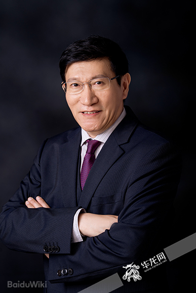

Prof. Xiu-Wu Bian
Army Medical University (Third Military Medical University) & Jinfeng Laboratory
Online · Advisory
Academician Xiu-Wu Bian, MD, PhD, is a world-renowned pathologist and a member of the Chinese Academy of Sciences. He serves as the Director of the Institute of Pathology and the Southwest Cancer Center at the Army Medical University. Prof. Bian is a pioneer in the study of cancer stem cells and the tumor microenvironment, particularly in gliomas. His work has significantly advanced the understanding of tumor angiogenesis and invasion. In recent years, he has spearheaded the integration of digital pathology and AI for precision diagnosis, leading the Jinfeng Pathology Precision Diagnosis Center. He has published over 250 papers in prestigious journals such as Nature, Cell, and Science, with an h-index exceeding 60.